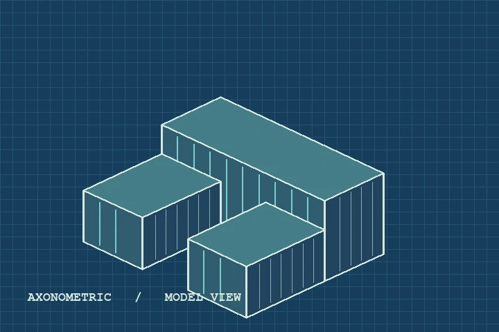
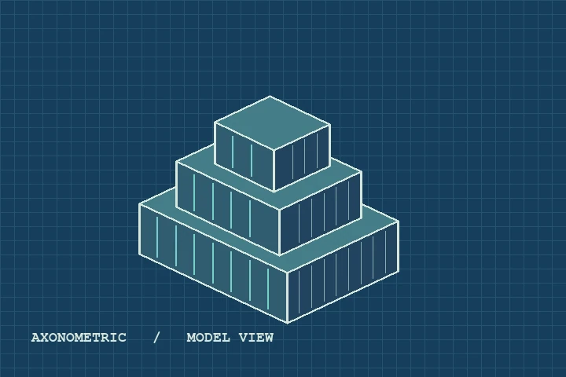

Fold Works — Portfolio.exe
▁
作品 (W)
操作 (S)
关于 (A)
联系 (C)
GitHub
✳
FOLD WORKS
Fold
Works
.
纸上建筑事务所
用三个小体量研究住与行。把模型转成俯视图，看围合、退台和入口怎样改变空间。
打开建筑模型
MODEL ARCHIVE
轴测图
样本
转角住宅
半围合庭院
退台住宅
切换平面图
C:\Studio\Plan
3 files · v1.0.0
建筑模型 — Plan
▁
Model archive
.
建筑模型
Corner House
转角住宅

Court House
半围合庭院

Step House
退台住宅
八个主题桌面
平面设计
城市摄影
电子音乐
植物标本
建筑模型
陶器釉色
旅行邮票
星座图谱
恢复主窗口
打开作品窗口
×
 Fold Works — Portfolio.exe
Fold Works — Portfolio.exe
 建筑模型 — PlanFold Works — Portfolio.exe建筑模型 — Plan
建筑模型 — PlanFold Works — Portfolio.exe建筑模型 — Plan 电子音乐
电子音乐 植物标本
植物标本 旅行邮票
旅行邮票